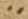
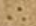

Signs for abbreviations:
 - LATIN ABBREVIATION FOR SCILICET
- LATIN ABBREVIATION FOR SCILICET
- LATIN ABBREVIATION FOR ID EST
List of witnesses:
List of hands:
Editorial prinicples:
Signs for abbreviations:
- LATIN ABBREVIATION FOR SCILICET
- LATIN ABBREVIATION FOR ID EST
Signs for construe marks:
 - CONSTRUE MARK TWO HORIZONTAL DOTS - (marks words syntactically connected)
- CONSTRUE MARK TWO HORIZONTAL DOTS - (marks words syntactically connected)
 - CONSTRUE MARK RIGHT HALF RING WITH DOT - (marks the main verb in the sentence)
- CONSTRUE MARK RIGHT HALF RING WITH DOT - (marks the main verb in the sentence)
 - CONSTRUE MARK TWO VERTICAL DOTS - (marks words syntactically connected)
- CONSTRUE MARK TWO VERTICAL DOTS - (marks words syntactically connected)
- CONSTRUE MARK CONVERGING STROKES WITH DOT ABOVE - (marks words syntactically connected)
 - CONSTRUE MARK TWO CONVERGING STROKES - (marks words syntactically connected)
- CONSTRUE MARK TWO CONVERGING STROKES - (marks words syntactically connected)
Reference signs:
 - REFERENCE SIGN TWO HORIZONTAL DOTS WITH ACUTE
- REFERENCE SIGN TWO HORIZONTAL DOTS WITH ACUTE
 - REFERENCE SIGN INVERTED N WITH DOT BELOW
- REFERENCE SIGN INVERTED N WITH DOT BELOW
 - REFERENCE SIGN HALF RING WITH DOT BELOW
- REFERENCE SIGN HALF RING WITH DOT BELOW
 - REFERENCE SIGN HALF RING WITH DOT ABOVE
- REFERENCE SIGN HALF RING WITH DOT ABOVE
 - REFERENCE SIGN TWO HORIZONTAL DOTS
 - REFERENCE SIGN DOT WITH ACUTE
- REFERENCE SIGN DOT WITH ACUTE
 - REFERENCE SIGN ACUTE FOLLOWED BY DOT
- REFERENCE SIGN ACUTE FOLLOWED BY DOT
 - REFERENCE SIGN THREE DOTS IN TRIANGLE SHAPE
 - REFERENCE SIGN OBLIQUE BALLON WITH ROPE
- REFERENCE SIGN OBLIQUE BALLON WITH ROPE
 - REFERENCE SIGN OBLIQUE V
- REFERENCE SIGN OBLIQUE V
(VD)
(VS)
(Ir)
(Iv)
(IIr)
(IIv)
(IIIr)
(IIIv)
(IVr)
(IVv)
(1r)
Praefatio
II 1,0 (1) Priscianus Caesariensis grammaticus (2) Iuliano consuli ac patricio
EDITION: Caesariensis
II 1,1 (3) cum omnis eloquentiae doctrinam et omne studiorum genus
II 1,2 sapientiae luce (4) [7 char illegible] [praeful]gens a Graecorum fontibus deriuatum Latinos proprio
II 1,3 sermone inuenio celebrasse et in omni (5) bus illorum uestigia liberalibus
EDITION: inuenio
EDITION: celebrasse
EDITION: et
et → uideo (II 1,4)scripta (II 1,4 prolata v.l.)
EDITION: in
EDITION: omnibus
omnibus → liberalibus (II 1,3)artibus (II 1,4)
EDITION: liberalibus
II 1,4 consecutos artibus uideo, nec solum ea, quae emendate ab illis sunt prolata, (6) sed
EDITION: artibus
EDITION: uideo
EDITION: ea
EDITION: prolata
EDITION: emendate
II 1,5 etiam quosdam errores eorum amore grecorum (scr-1) doctorum deceptos imitari, in quibus
EDITION: eorum
EDITION: quibus
EDITION: quibus
II 1,6 maxime uetustissi (7) ma grammatica ars arguitur peccasse, cuius auctores,
EDITION: ars
ars → cuius (II 1,6)
EDITION: peccasse
EDITION: peccasse
EDITION: cuius
II 1,7 quanto sunt iuniores, tanto perspicaciores, et ingeniis floruisse (8) et
EDITION: perspicatiores
perspicatiores → floruisse (II 1,7)ualuisse (II 1,8)confirmantur (II 1,8)
EDITION: floruisse
II 1,8 diligentia ualuisse omnium iudicio confirmantur eruditissimorum (quid enim
EDITION: ualuisse
EDITION: confirmantur
II 1,9 Herodiani artibus certius, quid (9) Apollonii scrupulosis quaestionibus
EDITION: certius
EDITION: scrupulosis
II 1,10 enucleatius possit inueniri?) cum igitur eos omnia fere uitia, quaecumque
EDITION: enucleatius
EDITION: enucleatius
EDITION: cum
cum → igitur (II 1,10)comperio (II 1,12)
EDITION: igitur
EDITION: eos
eos → omnia (II 1,10)uitia (II 1,10)artis (II 1,11)grammaticae (II 1,11)expurgasse (II 1,12)
EDITION: omnia
EDITION: uitia
II 1,11 antiquorum Grae (10) corum commentariis sunt relicta artisgrammaticae,
EDITION: commentariis
EDITION: commentariis
EDITION: artis
EDITION: grammaticae
II 1,12 expurgassecomperio certisque rationis legibus emendasse, (11) nostrorum autem
EDITION: expurgasse
EDITION: comperio
II 1,13 neminem post illos imitatorem eorum extitisse, quippe in neglegentiam
EDITION: in neglegentiam
Praefatio (continued)
II 2,1 cadentibus studiis literarum (12) propter inopiam scriptorum, quamuis audacter,
EDITION: inopiam
II 2,2 sed non impudenter, ut puto, conatus sum pro uiribus rem arduam
EDITION: impudenter
EDITION: impudenter
EDITION: impudenter
EDITION: ut
ut → rem (II 2,2)arduam (II 2,2)
EDITION: puto
EDITION: conatus sum
EDITION: rem
EDITION: arduam
II 2,3 quidem, sed officio professionis non indebitam, supra nominatorum praecepta
EDITION: professionis
II 2,4 uirorum, quae congrua sunt (14) uisa, in Latinum transferre sermonem, collectis
II 2,5 etiam omnibus fere, quaecumque necessaria nostrorum quoque inueniuntur (15)
II 2,6 artium commentariis grammaticorum, quod gratum fore credidi
EDITION: commentariis
II 2,7 temperamentum, si ex utriusque linguae modera (16) toribus elegantiora in unum
EDITION: moderatoribus
EDITION: moderatoribus
EDITION: elegantiora
EDITION: elegantiora
II 2,8 coeant corpus meo labore faciente, quia nec uituperandum me esse credo, si
EDITION: coeant
II 2,9 eos imitor, (17) qui principatum inter scriptores Graios artis grammaticae
II 2,10 possident, cum ueteres nostri in erroribus etiam, ut dic (18) tum est, Graecos
II 2,11 aequiperantes maximam tamen laudem sunt consecuti.
EDITION: aequiperantes
EDITION: equipperantes
EDITION: equipperantes
EDITION: laudem sunt
II 2,12 exemplum etiam proponere placuit, ne pi (19) geat alios etiam a me uel
II 2,13 ignorantia forte praetermissa uel uitiose dicta (nihil enim ex omni parte
II 2,14 perfectum in huma (20) nis inuentionibus esse posse credo) sua quoque
EDITION: inuentionibus esse posse credo) sua
EDITION: sua
EDITION: sua
II 2,15 industria ad communem literatoriae professionis utilitatem congrua ratio (21) nis
II 2,16 proportione uel addere uel mutare tractantes. namque festinantius quam
EDITION: proportione
II 2,17 uolui hos edere me libros compule (22) runt, qui alienis laboribus insidiantes
EDITION: edere
II 2,18 furtimque et quasi per latrocinia scripta aliis subripientes unius nominis ad (23)
II 2,19 titulum pertinentis infanda mutatione totius operis in se gloriam transferre
EDITION: infanda
II 2,20 conantur. sed quoniam in tanta operis (24) materia impossibile est aliquid
EDITION: impossibile
II 2,21 perfectum breuiter exponi, spatii quoque ueniam peto, quamuis ad
EDITION: perfectum breuiter
EDITION: spatii
II 2,22 Herodiani scriptorum (25) pelagus et ad eius patris Apollonii spatiosa uolumina
EDITION: patris
II 2,23 meorum compendiosa sunt existimanda scripta librorum.
II 2,24 huius (26) tamen operis te hortatorem sortitus iudicem quoque facio,
II 2,25 Iuliane consul ac patricie, cui summos dignitatis gra (27) dus summa
EDITION: consul ac patricie
EDITION: patricie
II 2,26 adquisiuit in omni studio ingenii claritudo, non tantum accipiens ab excelsis
II 2,27 gradibus honorum (28) pretii, quantum illis decoris addens tui, cuius mentem
II 2,28 tam Homeri credo quam Virgilii anima constare, quo (29) rum uterque
II 2,29 arcem possederat musicae, te tertium ex utroque compositum esse
EDITION: arcem
EDITION: possederat
EDITION: esse
II 2,30 confirmans, quippe non minus (30) Graecorum quam Latinorum in omni doctrinae
II 2,31 genere praefulgentem. tibi ergo hoc opus deuoueo, omnis (31) eloquentiae
EDITION: genere
EDITION: deuoueo
Praefatio (continued)
II 3,1 praesul, ut quantamcumque mihi deus annuerit suscepti laboris gloriam,
EDITION: quantamcumque
EDITION: gloriam
EDITION: quantamcumque gloriam
EDITION: gloriam
II 3,2 te comite quasi sole quodam dilu (32) cidius crescat.
II 3,3 titulos etiam uniuersi operis per singulos supposui libros, quo
EDITION: supposui
II 3,4 facilius, quicquid ex his quaeratur, dis (33) cretis possit locis inueniri.
EDITION: inueniri
II 3,5 primus liber continet de uoce et eius speciebus; de litera: quid sit
EDITION: primus
II 3,6 litera, de eius generibus (34) et speciebus, de singularum potestate, quae in
II 3,7 quas transeunt per declinationes uel compositiones partium orationis.
II 3,8 secundus (35) de syllaba: quid sit syllaba, quot literis constare potest et
EDITION: secundus
II 3,9 quo ordine et quo sono, de accidentibus singulis syllabis;
(1v)
(1) de dictione: quidEDITION: accidentibus
II 3,10 sit dictio, quae eius differentia ad syllabam; de oratione: quid sit oratio,
EDITION: eius
II 3,11 quot eius partes, de earum proprietate; de nomine: (2) quid sit nomen, de
II 3,12 accidentibus ei, quot sunt species propriorum nominum, quot
II 3,13 appellatiuorum, quot adiectiuorum, quot deriuatiuorum; de patro (3) nymicis: quot eorum
EDITION: appellatiuorum
EDITION: deriuatiuorum
EDITION: patronymicis
II 3,14 formae, quomodo deriuantur, ex quibus primitiuis; de diuersis
EDITION: deriuantur
II 3,15 possessiuorum terminationibus et eorum regulis.
II 3,16 tertius de com (4) paratiuis et superlatiuis et eorum diuersis extremitatibus:
EDITION: tertius
EDITION: de
II 3,17 ex quibus positiuis et qua ratione formantur; de diminutiuis: quot eorum
II 3,18 species, ex quibus (5) declinationibus nominum, quomodo formantur.
II 3,19 quartus de denominatiuis et uerbalibus et participialibus et
EDITION: quartus
EDITION: de
II 3,20 aduerbialibus: quot eorum species, (6) ex quibus primitiuis, quomodo nascuntur.
II 3,21 quintus de generibus dinoscendis per singulas terminationes; de
EDITION: quintus
EDITION: de
II 3,22 numeris; de figuris et earum compage; de casu. (7)
II 3,23 sextus de nominatiuo casu per singulas extremitates omnium
EDITION: sextus
EDITION: de
II 3,24 nominum, tam in uocales quam in consonantes desinentium, per ordinem; de
II 3,25 genetiuorum (8) tam ultimis quam paenultimis syllabis.
II 3,26 septimus de ceteris obliquis casibus, tam singularibus quam pluralibus.
EDITION: septimus
EDITION: de
Praefatio (continued)
II 4,1 octauus de uerbo et eius accidentibus. (9)
EDITION: octauus
EDITION: de
EDITION: eius
II 4,2 nonus de regulis generalibus omnium coniugationum.
EDITION: nonus
EDITION: de
II 4,3 decimus de praeterito perfecto.
EDITION: decimus
EDITION: de
II 4,4 undecimus de participio.
EDITION: undecimus
EDITION: de
II 4,5 duodecimus et tertiusdecimus de pronomine. (10)
II 4,6 quartusdecimus de praepositione.
EDITION: quartusdecimus
EDITION: de
II 4,7 quintusdecimus de aduerbio et interiectione.
EDITION: quintusdecimus
EDITION: de
II 4,8 sextusdecimus de coniunctione.
EDITION: sextusdecimus
EDITION: de
II 4,9 septimusdecimus et octauusdecimus de constructione siue (11) ordinatione
II 4,10 partium orationis inter se.
Liber Primus
II 5,0 INCIPIT ARS PRISCIANI GRAMMATICI CESARIENSIS (scr-1) liber primus de uoce
EDITION: liber primus
EDITION: de uoce
II 5,1 (12) philosophi definiunt, uocem esse aerem tenuissimum ictum uel suum
EDITION: philosophi
EDITION: philosophi
EDITION: philosophi
EDITION: definiunt
EDITION: uocem
EDITION: uocem
II 5,2 sensibile aurium, id est quod proprie auribus ac (13) cidit. et est prior definitio
EDITION: prior definitio
(2r)
(2v)
(3r)
(3v)
(4r)
(4v)
(5r)
(5v)
(6r)
(6v)
(7r)
(7v)
(8r)
(8v)
(9r)
(9v)
(10r)
(10v)
(11r)
(11v)
(12r)
(12v)
(13r)
(13v)
(14r)
(14v)
(15r)
(15v)
(16r)
(16v)
(17r)
(17v)
(18r)
(18v)
(19r)
(19v)
(20r)
(20v)
(21r)
(21v)
(22r)
(22v)
(23r)
(23v)
(24r)
(24v)
(25r)
(25v)
(26r)
(26v)
(27r)
(27v)
(28r)
(28v)
(29r)
(29v)
(30r)
(30v)
(31r)
(31v)
(32r)
(32v)
(33r)
(33v)
(34r)
(34v)
(35r)
(35v)
(36r)
(36v)
(37r)
(37v)
(38r)
(38v)
(39r)
(39v)
(40r)
(40v)
(41r)
(41v)
(42r)
(42v)
(43r)
(43v)
(44r)
(44v)
(45r)
(45v)
(46r)
(46v)
(47r)
(47v)
(48r)
(48v)
(49r)
(49v)
(50r)
(50v)
(51r)
(51v)
(52r)
(52v)
(53r)
(53v)
(54r)
(54v)
(55r)
(55v)
(56r)
(56v)
(57r)
(57v)
(58r)
(58v)
(59r)
(59v)
(60r)
(60v)
(61r)
(61v)
(62r)
(62v)
(63r)
(63v)
(64r)
(64v)
(65r)
(65v)
(66r)
(66v)
(67r)
(67v)
(68r)
(68v)
(69r)
(69v)
(70r)
(70v)
(71r)
(71v)
(72r)
(72v)
(73r)
(73v)
(74r)
(74v)
(75r)
(75v)
(76r)
(76v)
(77r)
(77v)
(78r)
(78v)
(79r)
(79v)
(80r)
(80v)
(81r)
(81v)
(82r)
(82v)
(83r)
(83v)
(84r)
(84v)
(85r)
(85v)
(86r)
(86v)
(87r)
(87v)
(88r)
(88v)
(89r)
(89v)
(90r)
(90v)
(91r)
(91v)
(92r)
(92v)
(93r)
(93v)
(94r)
(94v)
(95r)
(95v)
(96r)
(96v)
(97r)
(97v)
(98r)
(98v)
(99r)
(99v)
(100r)
(100v)
(101r)
(101v)
(102r)
(102v)
(103r)
(103v)
(104r)
(104v)
(105r)
(105v)
(106r)
(106v)
(107r)
(107v)
(I*r)
(I*v)
(II*r)
(II*v)
(III*r)
(III*v)
(IV*r)
(IV*v)
(V*r)
(V*v)
(HS)
(HD)
(Rücken)
(Oberschnitt)
(Vorderschnitt)
(Unterschnitt)